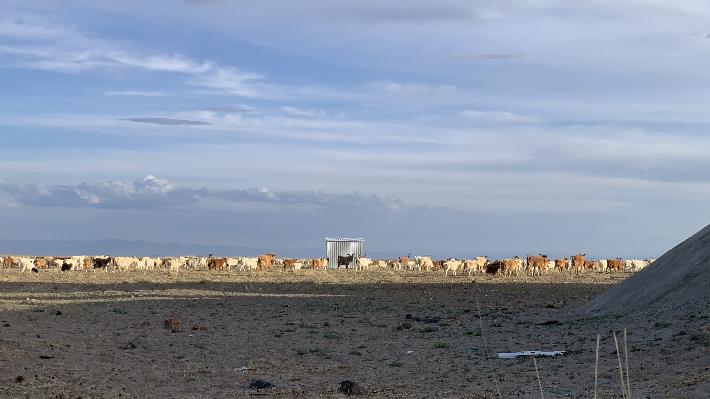
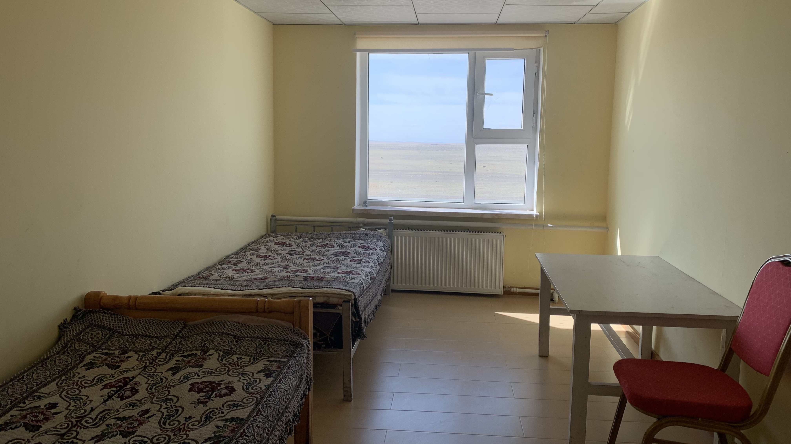
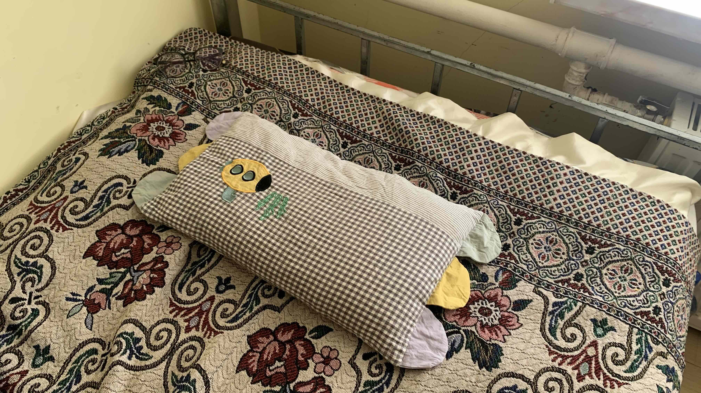
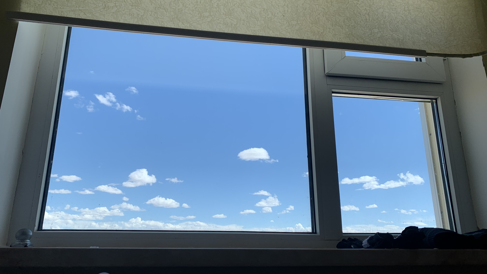
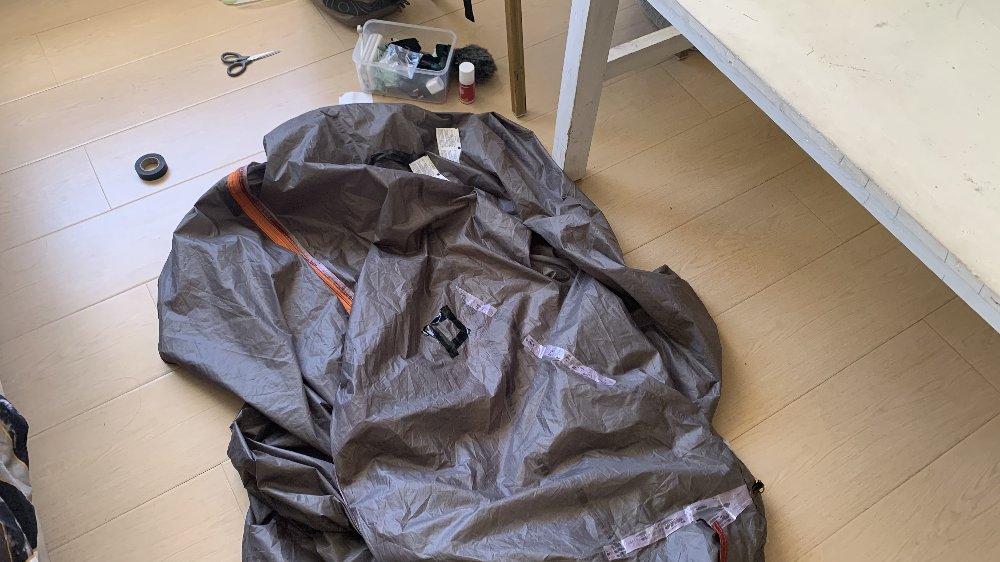
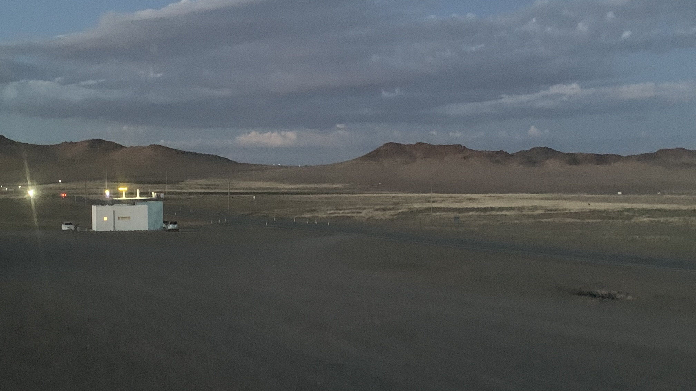
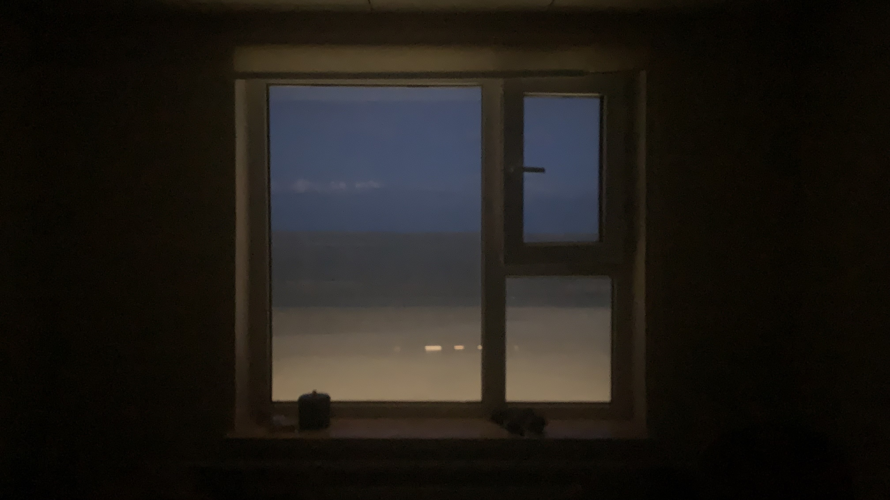

k-Day 102｜玻璃門內

一早睜開眼，帳篷已經被風吹得啪嗒啪嗒響。羊群們已經出來吃草，吸了幾下熟悉的草味，起身收拾後轉移陣地，到一公里外的Buudal。
地圖上標記一萬30000元，抱著這樣的期待推開門，向一位正在餐廳廚房忙碌的女士詢價。
對方在手機上按下70000，看了我的表情又問我是一個人嗎？是的話50000。我在手機上寫下：「我正在自行車旅行，沒有很多錢，請問有沒有便宜的房間？」對方看完訊息露出笑容，對旁邊正在切馬鈴薯的女士說了什麼，回頭在我的手機按下30000的價格。
自行車當然可以牽進來，就鎖在樓梯角落。女士帶我上樓。

推開房門，開始開窗通風、拉上窗簾，正準備拿棉被時，我示意有自己的睡袋。她於是拿了一個小枕頭，套上枕頭套，回到房間放上床就離開了。

在房間裡開始煮泡麵，自從離開上一個休息站就再也沒有吃到熱食。吃飽後一陣放鬆，一屁股坐到床上。是鬆軟的彈簧床！！！鬆軟且彈簧沒壞沒變形的彈簧床！！！倒頭躺下，脖頸剛好貼合在小枕頭上。好舒適的枕頭！！！裡面填充了會發出沙沙聲的細顆粒，恰當的體積保留了一點空隙，讓後腦和脖子的弧度毫無壓力地壓出符合脊椎伸展的弧度。

睜開眼已經是下午三點半。好平靜的感覺。

下樓付了房費，買瓶罐裝咖啡，開始修補帳篷。被把手戳破的地方重新貼上剩下的最後一片睡墊補片，防水膠條脫落的縫線處則貼上電火布。收拾好垃圾已經是下午六點，電火布看來十分不牢靠，不過既然已經選擇了戈壁路線，降雨機率和強度應該小很多。
把所有行李掏出來檢視有沒有用不到的廢品，顯然經過四千多公里後留下的都是關鍵的存在。整理一下位置，把重物和厚衣服重新塞回最底層。
拿出兩個巧克派準備享用，咬了一口發現是紅磚口感，仔細檢查發現昨天在超市買的巧克派不知為何有一半的封口都是裂開的。
那就泡個咖啡，晚上吃個泡麵就繼續睡覺吧。

昨晚被城鎮裡的野狗叫聲吵到凌晨四點多才短暫入睡，為了接下來的最後兩週，今天一定要把所有的能量都睡回來。
自從離開日本後，我好像幾乎就沒有由衷發出「好美」的讚嘆。坐在地上整理行李，抬頭看到被窗框切割出來的眼前景象。幾乎整個月都身處在逆風地獄的人，一旦退到玻璃的另一邊，只用眼睛看著被切割出來的粉藍色漸層天空、遠山、枯黃的荒草、褐色的牛隻、灰色的柏油路和沙色礫石，以及遠方直到天際的白色蒙古包和上方同樣反射著夕陽的金黃色積雲，似乎此刻的感覺可以被稱之為美。
審美的凝視還得在玻璃門內嗎？此刻雙腳的肌肉仍在抽搐。

今日花費： 兩晚房費60000、咖啡 3500元